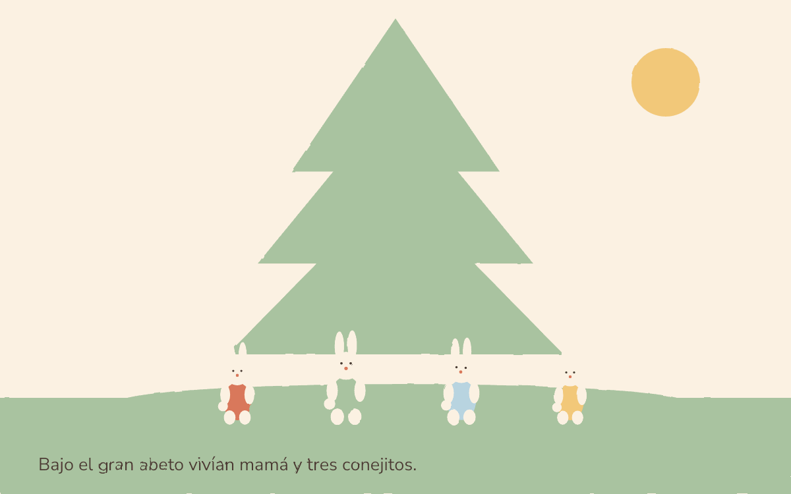

6 frames · SVG + GIF · Paper Craft
Un cuento de dominio público inspirado en Beatrix Potter, 1902. Texto original en español; conejos, abeto, puerta y huerto dibujados con capas vectoriales por Luna 6 Max.
El SVG y el GIF salen de los mismos seis frames. El GIF está rasterizado con @napi-rs/canvas y gifenc; el SVG conserva el texto y la animación de cada cuadro.
